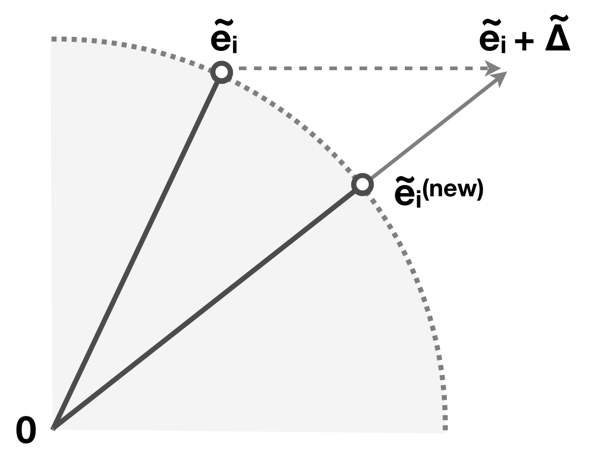
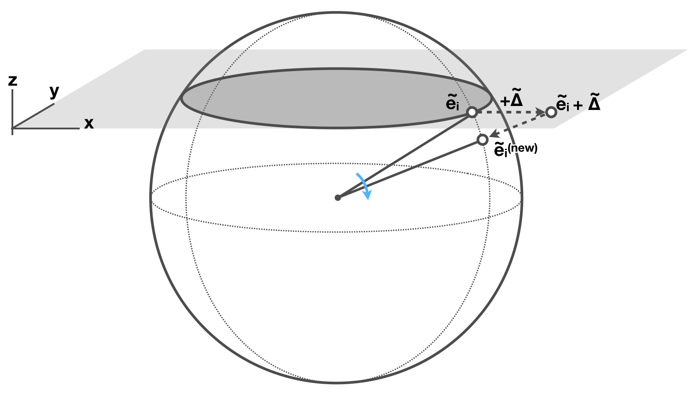
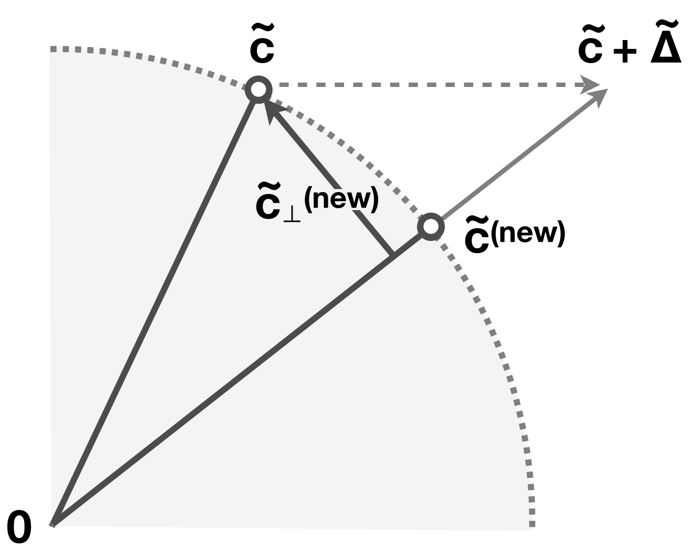

大巡游[[asimov1985grand]]是一种经典的高维点云可视化技术，它将高维数据集投影到二维空间。 随着时间推移，大巡游会平滑地动画其投影过程，最终向观察者展示数据集的每一个可能视角。 与现代非线性投影方法如 t-SNE[[maaten2008visualizing]] 和 UMAP[[mcinnes2018umap]] 不同，大巡游本质上是一种线性方法。 本文将展示如何利用大巡游的线性特性，实现一系列特别适合可视化神经网络行为的功能。 具体而言，我们提出了三个有实际意义的应用场景：随着网络权重变化而可视化训练过程、随着数据在网络中流动而可视化层间行为，以及同时可视化对抗样本[[szegedy2013intriguing]]的生成过程及其如何欺骗神经网络。
引言
深度神经网络在监督学习竞赛（如 ImageNet 大规模视觉识别挑战赛 ILSVRC[[ILSVRC15]]）中经常取得顶级性能。 遗憾的是，它们的决策过程 notoriously 难以解释[[lipton2016mythos]]，训练过程也常常难以调试[[wongsuphasawat2018visualizing]]。 本文提出了一种可视化神经网络响应的方法，该方法同时利用了深度神经网络的特性与大巡游的特性。 值得注意的是，我们的方法能让我们更直接地推理数据变化与可视化结果变化之间的关系[[kindlmann2014algebraic]]。 正如我们将展示的，这种数据-可视化对应关系是我们提出方法的核心，尤其与 UMAP 和 t-SNE 等其他非线性投影方法相比。
为了理解神经网络，我们通常会观察它在输入样本（包括真实和合成的样本）上的行为[[olah2017feature]]。 这类可视化有助于阐明神经网络对单个样本的激活模式，但对于不同样本之间的关系、网络在训练过程中的不同状态，或数据如何在网络各层中流动等问题，它们提供的洞见可能较少。 因此，我们的目标是能够可视化我们关注对象周围的上下文：当前训练轮次与下一轮次之间有什么区别？当图像通过网络时，分类结果是如何收敛（或发散）的？ 线性方法很有吸引力，因为它们特别容易进行推理。 大巡游的工作原理是生成一个随机的、平滑变化的数据集旋转，然后将其投影到二维屏幕上：两者都是线性过程。 虽然深度神经网络显然不是线性过程，但它们通常将非线性限制在一小部分操作中，这使得我们仍然能够推理其行为。 我们提出的方法通过提供更高的一致性来更好地保留上下文：如果数据以特定方式发生变化，应该能够知道可视化结果会如何相应改变。
工作示例
为了展示我们将提出的技术，我们使用 3 个常用的图像分类数据集训练了深度神经网络模型（DNNs）：MNIST [1]、 fashion-MNIST [2] 以及 CIFAR-10 [3]。 虽然我们的网络架构比当前主流 DNN 更简单、更小，但它仍然能代表现代网络的特征，并且足够复杂，能够同时展示我们提出技术的效果和典型方法的不足。
下图展示了本文中将使用的神经网络的简单功能框图。该神经网络由一系列线性层（包括卷积[4]和全连接[5]）、最大池化层和 ReLU[6] 层组成，最后以一个 softmax[7] 层结束。
展开的神经网络。彩色块是基本构建函数（即神经网络层），灰度热力图则是输入图像或经过某些层后的中间激活向量。
尽管神经网络能够完成令人惊叹的分类任务，但究其本质，它们只是由相对简单的函数组成的流水线。 对于图像，输入是灰度图像的标量值二维数组，或彩色图像的 RGB 三元组。 必要时，总可以将二维数组展平为等价的 w \cdot h \cdot c 维向量。 同样，复合函数中任意一层函数之后的中间值，或某一层之后神经元的激活值，也可以视为 \mathbb{R}^n 维向量，其中 n 是该层的神经元数量。 例如，softmax 可以看作是一个 10 维向量，其值是和为 1 的正实数。 这种将神经网络中的数据视为向量的观点，不仅能让我们以数学上紧凑的形式表示复杂数据，还提示我们如何更好地对其进行可视化。
大多数简单函数可分为两类：它们要么是对输入的线性变换（如全连接层或卷积层），要么是在每个分量上独立工作的相对简单的非线性函数（如 sigmoid 激活[8] 或 ReLU 激活）。 某些操作，特别是最大池化[9] 和 softmax，则不属于这两类。我们稍后会再讨论这一点。
上图帮助我们一次观察单个图像；然而，它并未提供足够的上下文来理解层之间、不同样本之间或不同类别标签之间的关系。为此，研究者们通常会转向更复杂的可视化技术。
使用可视化理解 DNN
让我们从考虑可视化 DNN 训练过程的问题开始。 在训练神经网络时，我们通过某种形式的梯度下降来优化函数中的参数，以最小化一个标量损失函数。 我们希望损失持续下降，因此会监控整个训练和测试损失在各训练轮次（即“epoch”）中的历史，以确保损失随时间减少。 下图展示了 MNIST 分类器训练损失的折线图。
虽然其总体趋势符合预期——损失稳步下降，但在第 14 和 21 个 epoch 附近我们看到了一些奇怪的现象：曲线几乎变平，然后才再次下降。 发生了什么？是什么导致了这种情况？
如果我们按真实标签/类别将输入样本分开，并像上图那样绘制每个类别的损失，我们会发现那两次下降分别是由类别 1 和 7 引起的；模型在训练过程中学习不同类别的时间差异很大。 虽然网络很早就学会了识别数字 0、2、3、4、5、6、8 和 9，但直到第 14 个 epoch 它才开始成功识别数字 1，直到第 21 个 epoch 才识别数字 7。 如果我们事先知道要关注特定类别的错误率，那么这张图表现得很好。但如果我们事先并不知道要找什么呢？
在这种情况下，我们可以考虑一次性可视化所有样本的神经元激活值（例如在最后的 softmax 层），以寻找类似特定类别行为这样的模式，以及其他模式。 如果该层只有两个神经元，一个简单的二维散点图就能工作。 然而，在我们使用的示例数据集中，softmax 层的点是 10 维的（在更大规模的分类问题中这个数字可能还要大得多）。 我们需要么每次只显示两个维度（随着可能的图表数量平方增长，这种方式难以扩展），要么使用降维技术将数据映射到二维空间并在一个图中显示它们。
最先进的降维技术是非线性的
现代降维技术如 t-SNE 和 UMAP 能够实现令人印象深刻的概括能力，提供的二维图像中相似点会被非常有效地聚类在一起。 然而，这些方法并不特别擅长在精细尺度上理解神经元激活的行为。 考虑前面提到的 MNIST 分类器在数字 1 和 7 上表现出不同学习速度的有趣特征：网络直到第 14 个 epoch 才学会识别数字 1，直到第 21 个 epoch 才学会识别数字 7。 我们计算了该现象发生时各 epoch 的 t-SNE、Dynamic t-SNE[[rauber2016visualizing]] 和 UMAP 投影。 现在考虑在训练过程中识别这种特定类别行为的任务。提醒一下，在本例中，奇怪的行为分别发生在数字 1（约第 14 个 epoch）和数字 7（约第 21 个 epoch）。 虽然这种行为并不特别微妙——数字从被错误分类变为被正确分类——但在下面任何图表中都很难注意到它。 只有经过仔细观察，我们才能注意到（例如）在 UMAP 图中，第 13 个 epoch 中聚类在底部的数字 1 在第 14 个 epoch 变成了一个新的触角状特征。
使用非线性降维的 MNIST 分类器 softmax 激活值。使用右侧按钮在图中高亮数字 1 和 7，或在图表上拖动矩形选择特定点子集以在其他图表中高亮显示。
非线性嵌入无法阐明这一现象的一个原因是，对于特定的数据变化，它们违背了数据-可视化对应原则[[kindlmann2014algebraic]]。更具体地说，该原则指出，特定的可视化任务应被建模为改变数据的函数；可视化将这种变化从数据传递到视觉，我们可以研究可视化变化在多大程度上容易被感知。 理想情况下，我们希望数据变化和可视化变化在幅度上匹配：一个几乎不可察觉的可视化变化应该对应于数据中最小的可能变化，而一个显著的可视化变化应该反映数据中的重大变化。 在这里，数据中只有一个子集发生了显著变化（例如从第 13 到 14 个 epoch 的所有数字 1 的点），但可视化中所有点都发生了剧烈移动。 对于 UMAP 和 t-SNE 而言，其中每个单独点的最终位置都以非平凡的方式依赖于整个数据分布。 这种特性对于可视化并不理想，因为它违背了数据-可视化对应原则，使得我们难以从可视化的变化中推断出数据底层发生的变化。
具有非凸目标的非线性嵌入也往往对初始条件敏感。 例如，在 MNIST 中，虽然神经网络在第 30 个 epoch 开始趋于稳定，但 t-SNE 和 UMAP 在第 30、31 和 32 个 epoch 之间（实际上一直到 99）仍会生成相当不同的投影。 时间正则化技术（如 Dynamic t-SNE）缓解了这些一致性问题，但仍存在其他可解释性问题[[wattenberg2016use]]。
现在，让我们考虑另一个任务：识别神经网络容易混淆的类别。 在这个例子中，我们将使用 Fashion-MNIST 数据集和分类器，观察凉鞋、运动鞋和短靴之间的混淆。 如果我们事先知道这三个类别很可能让分类器混淆，那么我们可以直接设计一个合适的线性投影，如下图最后一行所示（我们使用大巡游和后面将描述的直接操纵技术找到了这个特定投影）。这种情况下的模式非常显著，形成了一个三角形。 相比之下，t-SNE 错误地分离了类别簇（可能是由于选择了不合适的超参数）。 UMAP 成功地将三个类别分离开来，但即使在这种情况下，也无法区分第 5 和 10 个 epoch 中分类器的三向混淆（在线性方法中表现为三角形中心附近存在点），以及后续 epoch 中出现的多个双向混淆（表现为中心“空旷”）。
Fashion-MNIST 中的三向混淆。请注意，与非线性方法相比，精心构造的线性投影能够提供对分类器行为更好的可视化。
线性方法来帮忙
因此，当有机会时，我们应该优先选择那些数据变化能产生可预测、视觉显著的结果变化的方法，而线性降维通常具有这种特性。 在这里，我们在一个界面中重新访问了上面描述的线性投影，用户可以轻松地在不同训练 epoch 之间导航。 此外，我们引入了另一种仅线性方法才具备的有用能力，即直接操纵。 从 n 维到 2 维的每个线性投影都可以用 n 个二维向量来表示，这些向量具有直观的解释：它们是 n 维空间中的 n 个标准基向量将被投影到的向量。 在投影最终分类层的背景下，这一点尤其容易解释：它们是 100% 置信地被分类为某个特定类别的输入所到达的位置。 如果我们为用户提供通过拖动用户界面手柄来改变这些向量的能力，那么用户就可以直观地建立新的线性投影。
这种设置提供了额外良好的特性，可以解释前面图示中的显著模式。 例如，由于投影是线性的，且分类层中向量的系数之和为 1，因此在两个类别之间有 50% 置信度的分类输出会被投影到两个类别手柄之间的中点位置。
从
这个线性投影
中，我们可以轻松识别出
数字 1
在
第 14 个 epoch
以及
数字 7
在
第 21 个 epoch
的学习过程。 这个特性在下面的 Fashion-MNIST 示例中得到了清晰展示。 模型混淆了凉鞋、运动鞋和短靴，数据点在 softmax 层中形成了三角形形状。
这个
线性投影
清晰地显示了模型在
凉鞋
、运动鞋
和
短靴
之间的混淆。 类似地，
这个投影
显示了关于
套头衫
、外套
和
衬衫
的真实三向混淆。 （
衬衫
也与
T 恤/上衣
发生混淆。） 这两个投影都是通过直接操纵找到的。
落在类别之间的样本表明模型难以区分两者，例如凉鞋与运动鞋、运动鞋与短靴。 不过请注意，凉鞋与短靴之间并没有出现那么多混淆：这两个类别之间没有多少样本落在中间。 此外，大多数数据点都被投影到三角形的边缘附近。 这告诉我们，大多数混淆发生在三个类别中的两个之间，它们实际上是双向混淆。 在同一数据集中，我们还可以看到套头衫、外套和衬衫填充了一个三角形平面。 这与凉鞋-运动鞋-短靴的情况不同，因为样本不仅落在三角形的边界上，还出现在其内部：这是一个真正的三向混淆。 类似地，在 CIFAR-10 数据集中我们可以看到狗和猫、飞机和船之间的混淆。 CIFAR-10 中的混合模式不如 fashion-MNIST 清晰，因为被错误分类的样本数量要多得多。
这个
线性投影
清晰地显示了模型在
猫
和
狗
之间的混淆。 类似地，
这个投影
显示了关于
飞机
和
船
的混淆。 这两个投影都是通过直接操纵找到的。
大巡游
在上一节中，我们利用了我们事先知道要可视化哪些类别这一事实。 这意味着针对手头特定任务设计线性投影是容易的。 但如果我们事先不知道要选择哪个投影，因为我们并不清楚要寻找什么呢？ 主成分分析（PCA）是典型的线性降维方法， 它选择能最大程度保留数据方差的投影方向。 然而，softmax 层中的数据分布通常在许多轴方向上具有相似的方差，因为每个轴都集中了数量相似的样本在类别向量周围。[10] 因此，尽管 PCA 投影在训练过程中具有可解释性和一致性，但 softmax 激活的前两个主成分并不比第三个好多少。 那么我们应该选择哪一个呢？ 我们没有选择 PCA，而是提出通过平滑动画随机投影来可视化这些数据，这种技术被称为大巡游[[asimov1985grand]]。
从一个随机速度开始，它在高维空间中围绕原点平滑地旋转数据点，然后将其投影到 2D 进行显示。 以下是一些大巡游作用于（低维）对象的示例：
Softmax 层的大巡游
我们首先来看 softmax 层的大巡游。 Softmax 层相对容易理解，因为它的坐标轴具有很强的语义。正如我们前面所述，第 i 个坐标轴对应于网络对给定输入属于第 i 类的置信度。
在最后一个（第 99
个
）epoch 的 softmax 层的大巡游，分别对应
MNIST
、 fashion-MNIST
或
CIFAR-10
数据集。
Softmax 层的大巡游让我们能够定性地评估模型的性能。 在本文的特定情况下，由于我们对三个数据集使用了相似的架构，这也使我们能够衡量分类每个数据集的相对难度。 我们可以看出，MNIST 数据集的点分类置信度最高，数字都靠近 softmax 空间十个角中的某一个。对于 Fashion-MNIST 或 CIFAR-10，分离则没有那么干净，更多点出现在体积内部。
训练动态的大巡游
线性投影方法自然给出一个独立于输入点的表述，允许我们在数据变化时保持投影固定。 回顾我们的工作示例，我们为每个神经网络训练了 99 个 epoch，并记录了训练和测试样本子集上的整个神经元激活历史。 然后，我们可以使用大巡游来可视化这些网络的实际训练过程。
在开始时，当神经网络被随机初始化时，所有样本都被放置在 softmax 空间的中心附近，对每个类别的权重相等。 在训练过程中，样本逐渐移动到 softmax 空间中的类别向量。大巡游还让我们能够 比较训练数据和测试数据的可视化，从而定性地评估过拟合程度。 在 MNIST 数据集中，测试图像在训练过程中的轨迹与训练集一致。 数据点直接朝着其真实类别的角移动，所有类别在大约 50 个 epoch 后都趋于稳定。 另一方面，在 CIFAR-10 中，训练集和测试集之间存在不一致性。来自测试集的图像持续振荡，而大多数来自训练集的图像则收敛到对应的类别角。 在第 99 个 epoch，我们可以清楚地看到这两个集合之间的分布差异。 这表明模型对训练集过拟合，因此无法很好地泛化到测试集。
使用
这个 CIFAR-10 的视图
， 测试集（右）中点的颜色比训练集（左）更混杂，显示了训练过程中的过拟合现象。 将
CIFAR-10
与
MNIST
或
fashion-MNIST
相比， 后两者在训练集和测试集之间的差异要小得多。
层动态的大巡游
给定已介绍的大巡游技术和对坐标轴的直接操纵技术，理论上我们可以通过自身来可视化和操纵神经网络的任何中间层。 然而，这并不是一个非常令人满意的方法，原因有两个：
为了解决第一个问题，我们需要更仔细地关注各层如何变换它们接收到的数据。 要看到线性变换可能以一种特别无效的方式被可视化，请考虑下面这个（非常简单）的权重（用矩阵 A 表示），它接收一个 2 维隐藏层 k 并在另一个 2 维层 k+1 中产生激活。该权重只是简单地对 2D 中的两个激活取反：
想象我们希望随着数据在层之间移动而可视化网络的行为。一种在源 x_0 和目标 x_1 = A(x_0) = -x_0 之间插值这个动作 A 的方法是通过简单的线性插值
对于 t \in [0,1]. 这种策略本质上是在层之间复用线性投影系数。这是一种自然的想法，因为它们的维度相同。 然而，请注意以下事实：由 A 给出的变换只是数据的简单旋转。层 k+1 的每一个线性变换都可以简单地编码为层 k 的线性变换，只要该变换对条目的负值进行操作即可。 此外，由于大巡游本身内置了旋转，对于层 k 的每一种能产生特定图像的配置，都存在另一种不同的配置，通过考虑 A 的作用，能够为层 k+1 产生相同的图像。 实际上，这种朴素的插值违背了数据-可视化对应原则：数据中的一个简单变化（2D 中的取反/180 度旋转）导致了可视化中的剧烈变化（所有点都穿过原点）。
这一观察指向一个更通用的策略：在设计可视化时，我们应该尽可能明确地说明我们希望在可视化中捕捉输入（或过程）的哪些部分。 我们应该明确区分哪些是纯粹的表示性伪影应该被丢弃，哪些是我们应该从表示中提炼出的真实特征。 在这里，我们认为神经网络线性变换中的旋转因子远没有缩放和非线性等其他因子重要。 正如我们将展示的，大巡游在这种情况下特别有吸引力，因为它可以被设计为对数据的旋转具有不变性。 因此，神经网络线性变换中的旋转成分将被明确地变为不可见。
具体来说，我们通过利用线性代数的一个核心定理来实现这一点。 奇异值分解（SVD）定理表明，任何线性变换都可以分解为一系列非常简单的操作：一个旋转、一个缩放和另一个旋转[[austin2009svd]]。 将矩阵 A 应用于向量 x 就等价于应用这些简单操作：x A = x U \Sigma V^T。 但请记住，大巡游的工作原理是旋转数据集然后将其投影到 2D。 这两个事实结合在一起意味着，就大巡游而言，可视化向量 x 与可视化 x U 是相同的，可视化向量 x U \Sigma V^T 与可视化 x U \Sigma 也是相同的。 这意味着大巡游看到的任何线性变换都等价于 x U 和 x U \Sigma 之间的转换——一个简单的（逐坐标）缩放。 这明确表示任何线性操作（其矩阵用标准基表示）都是在两侧选择适当正交基后的缩放操作。 因此，大巡游为对齐被全连接（线性）层分隔的激活可视化提供了一种自然、优雅且计算高效的方式。[11]
（以下部分我们将数据点数量减少到 500，epoch 减少到 50，以减少基于 Web 的演示中传输的数据量。） 有了线性代数结构，我们现在能够将 softmax 中的行为和模式追溯到前面的层。 例如，在 fashion-MNIST 中，我们观察到鞋类（凉鞋、运动鞋和短靴作为一个组）与其他所有类别在 softmax 层中发生分离。 将其追溯到更早的层，我们可以看到这种分离早在第 5 层就发生了：
在层对齐的情况下，很容易看出鞋类从其他类别的早期分离，来自
这个视图
对抗动态的大巡游
作为最后一个应用场景，我们展示了大巡游如何阐明对抗样本[[szegedy2013intriguing]]被神经网络处理时的行为。 在这个示例中，我们使用 MNIST 数据集，并对 89 个数字 8 adversarially 添加扰动，使网络误以为它们是 0。 之前，我们要么动画训练动态，要么动画层动态。 我们固定一个训练好的神经网络，并可视化对抗样本的训练过程，因为它们通常本身是通过优化过程生成的。在这里，我们使用了 Fast Gradient Sign 方法。[[goodfellow2014explaining]] 同样，由于大巡游是一种线性方法，对抗样本位置随时间的变化可以忠实地归因于神经网络如何感知图像的变化，而不是可视化可能产生的伪影。 让我们来看看对抗样本如何演化以欺骗网络：
从
这个 softmax 视图
，我们可以看到
对抗样本
如何从
8
演变为
0
。 在对应的
pre-softmax
中，然而，这些对抗样本停在了两个类别的决策边界附近。 将数据显示为
图像
以查看每个步骤生成的实际图像，或显示为按标签着色的
点
。
通过这种对抗训练，网络最终以很高的置信度声称给定的输入都是 0。 如果我们停留在 softmax 层并在图中滑动对抗训练步骤，我们可以看到对抗样本从类别 8 的高分移动到类别 0 的高分。 虽然所有对抗样本最终都被分类为目标类别（数字 0），但其中一些在中途（大约第 25 个 epoch）绕道到接近空间中心的位置，然后再向目标移动。 比较两组的实际图像，我们看到那些“绕道”的图像往往噪声更大。
然而，更有趣的是中间层中发生的事情。 例如在 pre-softmax 中，我们看到这些假的 0 与真正的 0 表现不同：它们更靠近两个类别的决策边界，并且自己形成了一个平面。
讨论
大巡游的局限性
早些时候，我们将几种最先进的降维技术与大巡游进行了比较，表明非线性方法在理解神经网络行为方面并不具备与大巡游一样多的理想特性。 然而，最先进的非线性方法也有其自身优势。 只要涉及几何结构，比如理解 softmax 层中的多向混淆时，线性方法就更具可解释性，因为它们在投影中保留了数据的某些几何结构。 当拓扑结构是主要关注点时，例如当我们想要对数据进行聚类，或者需要为对几何不那么敏感的下游模型进行降维时，我们可能会选择非线性方法如 UMAP 或 t-SNE，因为它们在投影数据时有更多自由度，通常能更好地利用有限的维度。
动画和直接操纵的力量
当我们将线性投影与非线性降维进行比较时，我们使用了小 multiples 来对比不同的训练 epoch 和降维方法。 而大巡游则使用单一的动画视图。 在比较小 multiples 和动画时，文献中并没有普遍共识哪一种更好，除了 特定场景如动态图绘制[[archambault2010animation]]，或小 multiples 和动画图之间内容不可比[[tversky2002animation]]的顾虑。 不管这些顾虑如何，在我们的场景中，动画的使用自然来自于直接操纵以及大巡游可以在其中操作的连续旋转空间的存在。
非序列模型
在我们的工作中，我们使用了纯粹“序列”的模型，即各层可以按数字顺序排列，并且第 n+1 层的激活完全是第 n 层激活的函数。 然而，在最近的 DNN 架构中，出现非序列部分是很常见的，例如 highway[[srivastava2015highway]] 支路或针对不同任务的专用分支[[szegedy2015going]]。 使用我们的技术，可以可视化每个此类分支上的神经元激活，但要直接整合多个分支，还需要进一步的研究。
扩展到更大模型
现代架构也很“宽”。特别是在涉及卷积层时，如果我们将其视为作用于展平的多通道图像的大型稀疏矩阵，就可能会遇到可扩展性问题。 为了简单起见，在本文中我们通过写出卷积层的显式矩阵表示，暴力计算了此类卷积层的对齐。 然而，多通道 2D 卷积的奇异值分解可以被高效计算[[sedghi2018singular]]，然后可以直接用于我们上面描述的对齐。
技术细节
本节介绍实现坐标轴手柄和数据点的直接操纵以及如何实现层过渡的投影一致性技术所需的技术细节。
记号
在本节中，我们的记号约定是数据点表示为行向量。 整个数据集被组织为一个矩阵，其中每一行是一个数据点，每一列代表一个不同的特征/维度。 因此，当对数据应用线性变换时，行向量（以及整个数据矩阵）被变换矩阵左乘。 这有一个额外的好处，即当链式进行矩阵乘法时，公式从左到右阅读，并与交换图对齐。 例如，当数据矩阵 X 被矩阵 M 相乘生成 Y 时，我们在公式中写成 XM = Y，字母在图中的顺序相同：
此外，如果
M
的 SVD 是
M = U \Sigma V^{T}
，则我们有
X U \Sigma V^{T} = Y
，且图
与公式完美对齐。
直接操纵
我们前面介绍的直接操纵为数据点的可能投影提供了显式控制。 我们提供了两种模式：直接操纵类别坐标轴（“坐标轴模式”），或通过质心直接操纵一组数据点（“数据点模式”）。 根据维度和坐标轴语义，如层动态部分所讨论的，我们可能会更偏好其中一种模式。 我们会看到坐标轴模式是数据点模式的一个特例，因为我们可以将坐标轴手柄视为数据集中一个特定的“虚拟”点。 由于其简单性，我们将首先介绍坐标轴模式。
坐标轴模式
直接操纵的隐含语义是，当用户拖动一个 UI 元素（在本例中是一个坐标轴手柄）时，他们是在向系统发出信号，表示他们希望对应的 数据点被投影到 UI 元素被放下时的位置，而不是被拖动前的位置。 在我们的例子中，整体投影是一个旋转（最初由大巡游确定），而任意的用户操纵可能不会必然生成一个新的同样是旋转的投影。因此，我们的目标是找到一个新的旋转，它既满足用户请求，又接近之前大巡游投影的状态，从而使最终状态满足用户请求。 简而言之，当用户将 i^{th} 坐标轴手柄拖动 (dx, dy) 时，我们将其加到大巡游矩阵第 i^{th} 行的前两个条目中，然后对新矩阵的各行执行 Gram-Schmidt 正交化。 [12]
在详细说明为什么这工作得很好之前，让我们先形式化大巡游作用于标准基向量 e_i 的过程。 如下图所示，e_i 经过正交的大巡游矩阵 GT 后产生其旋转版本 \tilde{e_i}。 然后，\pi_2 是一个函数，它只保留 \tilde{e_i} 的前两个条目，并给出要在图中显示的手柄的 2D 坐标 (x_i, y_i)。
当用户在屏幕画布上拖动坐标轴手柄时，他们会在 xy 平面上产生一个增量变化 \Delta = (dx, dy)。 手柄的坐标变为：
请注意 x_i 和 y_i 是坐标轴手柄经过大巡游旋转后在高维中的前两个坐标，因此在 (x_i, y_i) 上的增量变化会在 \tilde{e_i} 上产生增量变化 \tilde{\Delta} := (dx, dy, 0, 0, \cdots)：
为了找到一个既尊重这个变化又邻近的大巡游旋转，首先注意到 \tilde{e_i} 正是正交大巡游矩阵 GT 的第 i^{th} 行 [13]。 自然地，我们希望新矩阵是原始 GT 将其 i^{th} 行替换为 \tilde{e_i}+\tilde{\Delta} 后的结果，即我们应该分别将 dx 和 dy 加到 GT 的第 (i,1) 和 (i,2) 个条目：
然而，对于任意的 (dx, dy)，\widetilde{GT} 都不是正交的。 为了找到一个接近 \widetilde{GT} 且正交的近似，我们对 \widetilde{GT} 的各行应用 Gram-Schmidt 正交化，并将 i^{th} 行在 Gram-Schmidt 过程中首先考虑：
请注意在 Gram-Schmidt 过程中第 i^{th} 行被归一化为单位向量，因此手柄的最终位置是 \tilde{e_i}^{(new)} = \textsf{normalize}(\tilde{e_i} + \tilde{\Delta}) 这可能与 \tilde{e_i}+\tilde{\Delta} 不完全相同，如下图所示 [14] 。

div-axis-mode
数据点模式
我们现在解释如何直接操纵数据点。 从技术上讲，这种方法每次只考虑一个点。 对于一组点，我们计算它们的质心，然后用此方法直接操纵这个单点。 更仔细地思考坐标轴模式的过程为我们提供了一种拖动任意单个点的方法。 回忆在坐标轴模式中，我们将用户的操纵 \tilde{\Delta} := (dx, dy, 0, 0, \cdots) 加到了 i^{th} 坐标轴手柄 \tilde{e_i} 的位置上。 这导致了大巡游矩阵 GT 的第 i^{th} 行发生增量变化。 接下来，作为 Gram-Schmidt 的第一步，我们将这一行归一化：
这两个步骤使得坐标轴手柄从 \tilde{e_i} 移动到 \tilde{e_i}^{(new)} := \textsf{normalize}(\tilde{e_i}+\tilde{\Delta})。
从这个运动的几何角度来看，对 \tilde{e_i} 执行“加增量然后归一化”等价于从 \tilde{e_i} 向 \tilde{e_i}^{(new)} 的一个旋转，如下图所示。 这种几何解释可以直接推广到任意数据点。

该图展示的是 3D 中的情况，但在更高维空间中本质上是相同的，因为两个向量 \tilde{e_i} 和 \tilde{e_i}+\tilde{\Delta} 仅张成一个 2 维子空间。 现在我们对直接操纵有了一个很好的几何直观：拖动一个点会在高维空间中诱导一个简单的旋转 [15] 。 这个直观认识正是我们实现对任意数据点进行直接操纵的方式，我们将在下面具体说明。
将这一观察从坐标轴手柄推广到任意数据点，我们希望找到一个旋转，使所选数据点子集 \tilde{c} 的质心移动到

首先，旋转角度可以通过它们的余弦相似度找到：
接下来，为了找到旋转的矩阵形式，我们需要一个方便的基。 设 Q 是一个基变换（正交）矩阵，其中前两行构成 2 维子空间 \textrm{span}(\tilde{c}, \tilde{c}^{(new)})。 例如，我们可以让它的第一行为 \textsf{normalize}(\tilde{c})，第二行为它在 \textrm{span}(\tilde{c}, \tilde{c}^{(new)}) 中的正交补 \textsf{normalize}(\tilde{c}^{(new)}_{\perp})，其余行补全整个空间：
其中 P 补全剩余空间。 利用 Q，我们可以找到在平面 \textrm{span}(\tilde{c}, \tilde{c}^{(new)}) 上旋转角度 \theta 的矩阵：
新的大巡游矩阵是原始 GT 和 \rho 的矩阵乘积： GT^{(new)} := GT \cdot \rho 现在我们应该能看到坐标轴模式和数据点模式之间的联系。 在数据点模式中，可以通过 Gram-Schmidt 找到 Q：令第一个基为 \tilde{c}，找到 \tilde{c}^{(new)} 在 \textrm{span}(\tilde{c}, \tilde{c}^{(new)}) 中的正交分量，重复取一个随机向量，找到它相对于当前基向量张成空间的正交分量，并将其加入基集合。 在坐标轴模式中，首先考虑第 i^{th} 行的 Gram-Schmidt 一步完成了旋转和基变换。
div-data-point-mode
div-direct-manipulation
层过渡
ReLU 层
当
l^{th}
层是 ReLU 函数时，输出激活为
X^{l} = ReLU(X^{l-1})
。由于 ReLU 不改变维度且函数是逐坐标进行的，我们可以通过简单的线性插值来动画过渡：对于时间参数
t \in [0,1]
#div-relu
线性层
线性层之间的过渡看起来可能很复杂，但正如我们将展示的，这是因为在过渡两侧选择了不匹配的基。 如果
X^{l} = X^{l-1} M
其中
M \in \mathbb{R}^{m \times n}
是线性变换的矩阵，那么它具有奇异值分解（SVD）：
其中
U \in \mathbb{R}^{m \times m}
和
V^T \in \mathbb{R}^{n \times n}
是正交的，
\Sigma \in \mathbb{R}^{m \times n}
是对角的。 对于任意的
U
和
V^T
，作用在
X^{l-1}
上的变换是一个旋转（
U
）、缩放（
\Sigma
）和另一个旋转（
V^T
）的复合，看起来可能很复杂。 然而，考虑将第
X^{l}
层的 Grand Tour 视图与第
X^{l+1}
层的视图关联起来的问题。大巡游有一个单一参数表示当前数据集的旋转。由于我们的目标是保持过渡一致，我们注意到
U
和
V^T
基本上没有意义——它们只是对视图的旋转，可以通过改变任一层中大巡游的旋转参数来精确“抵消”。 因此，我们不显示
M
，而是寻求只动画
\Sigma
的效果\Sigma
是一个逐坐标的缩放，因此在适当的基变换后，我们可以像 ReLU 那样对其进行动画。 给定
X^{l} = X^{l-1} U \Sigma V^T
，我们有
对于时间参数
t \in [0,1]
#div-linear
卷积层
卷积层可以表示为特殊的线性层。 通过表示方式的改变，我们可以像上一节那样动画卷积层。 对于 2D 卷积，这种表示方式的改变包括将输入和输出展平，并在一个稀疏矩阵
M \in \mathbb{R}^{m \times n}
中重复核的模式，其中
m
和
n
分别是输入和输出的维度。 这种表示方式的改变仅对小维度（例如最多 1000）实用，因为我们需要为线性层求解 SVD。 然而，多通道 2D 卷积的奇异值分解可以被高效计算
[[sedghi2018singular]]
，然后可以直接用于对齐。
#div-conv
最大池化层
动画最大池化层并不简单，因为最大池化既不是线性的
也不是逐坐标的。 我们用平均池化并按平均值与最大值之比进行缩放来代替它。 我们计算平均池化的矩阵形式，并使用其 SVD 来对齐该层前后的视图。 从功能上讲，我们的操作与最大池化具有等价的结果，但这引入了 意料之外的伪影。例如，向量
[0.9, 0.9, 0.9, 1.0]
的最大池化版本应该对
0.9
这些条目“不给予任何贡献”；然而，我们的实现会将下游层结果中大约 25% 的贡献归因于这些坐标中的每一个。
#div-maxpool
#div-align-representation
#div-technical-details
结论
尽管 t-SNE 和 UMAP 非常强大，但它们常常无法提供我们需要的对应关系，而这种对应关系 surprisingly 可以来自像大巡游这样相对简单的方法。我们提出的 Grand Tour 方法在用户可以或希望进行直接操纵时特别有用。 我们相信有可能设计出兼具两者优点的方法：使用非线性降维来创建激活层的中间、相对低维表示，然后使用大巡游和直接操纵来计算最终投影。